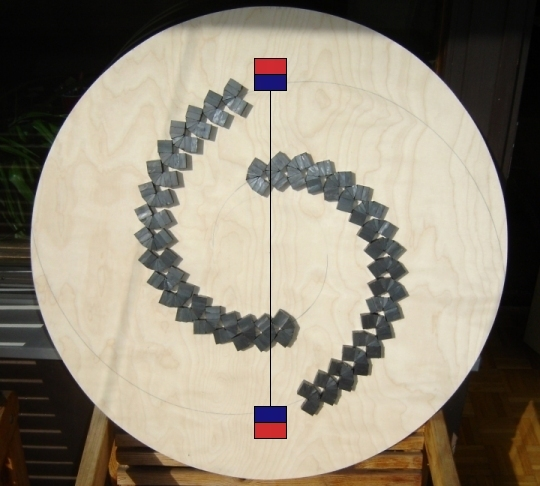
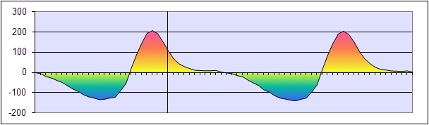
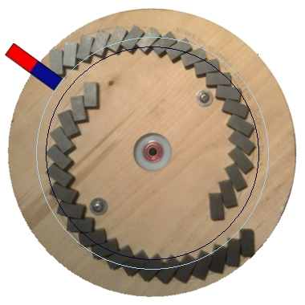
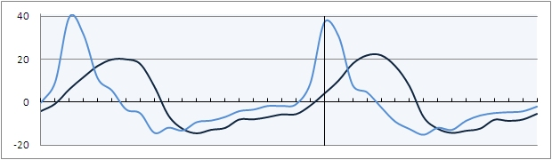

{kind=link}

This is one of the disc designs from 2007. It was inspired by Kohei Minato's bicycle wheel magnet motor. The stator magnets have their north poles oriented towards the outer edge at 45° angle. In the picture two rotor magnets are drawn. The rotor magnets are 50 x 50 x 19 mm ferrite magnets and they are positioned about 20 mm above the stator magnets.
Below is an excel graph made from digital scale measurements. The vertical line shows the exact position as seen in the first picture. The lines at the horizontal axel are the measurement points, where one step to the right represent 5° clockwise rotation. The red coloured areas represent clockwise torque and the blue areas represent counterclockwise torque.

Hyperbolic disc (December, 2010)
{kind=link}

Plywood disc was connected to nylon rotor with non magnetic materials. On the disc two hyperbolic spirals were drawn, and 40 ferrite magnets (24 x 12 x 10 mm, BR = 0.4 T, HC = 2 kOe) were glued on the spiral lines at 45° angles with their north poles up.
Below is a graph showing two torque waves during one full rotation with one alnico stator magnet (60 x 15 x 10 mm, BR = 1.1 T, HC = 0.6 kOe) positioned 10 mm above the rotor magnets. The torque from the smaller radius stator magnet position is shown with deep blue and from the larger radius position with light blue. The vertical line shows the stator magnet position as drawn on the picture. On the horizontal line, one step to the left equals 10° CW (clockwise) rotation. Positive values represent CW torque and negative values CCW torque.

As seen in the graph, the peak CW torque wave becomes about two times stronger and 20 degrees of an arc shorter with larger radius stator magnet position. The total CW torque in relation to CCW torque becomes a little stronger. The setups measured 5 % and 7 % more CW torque. However the measurement error can be up to 10 %.